Industry benchmarks · Volume I of VI · 108 entries · 1–108
The engine room.
Resources, CSS 3D, early physics and the opening WebGL grammar. Six volumes, 650 benchmark entries, one catalog. Every card opens a page held in this repository: a rendered three.js example, a local project demo, the three.js source room, or a source dossier.
Volume I
108 entries · Resources, CSS 3D, early physics and the opening WebGL grammar.Babylon.js
A repository record from BabylonJS/Babylon.js. This card opens a local source dossier with the vendored README and file list, not an upstream page.
BabylonJS/Babylon.jsMagic Tools
A repository record from ellisonleao/magictools. This card opens a local source dossier with the vendored README and file list, not an upstream page.
ellisonleao/magictoolsGamedev
A repository record from ellisonleao/magictools. This card opens a local source dossier with the vendored README and file list, not an upstream page.
ellisonleao/magictoolsAmmo.js
A local rendered project from kripken/ammo.js, served from this room's vendored source. “Ammo.js” opens its runnable page, not an upstream copy.
kripken/ammo.jsAmmo.js
A local rendered project from kripken/ammo.js, served from this room's vendored source. “Ammo.js” opens its runnable page, not an upstream copy.
kripken/ammo.jsKhronos Github Issue Page
A repository record from KhronosGroup/WebGL. This card opens a local source dossier with the vendored README and file list, not an upstream page.
KhronosGroup/WebGLWebGL Source Code
A repository record from KhronosGroup/WebGL. This card opens a local source dossier with the vendored README and file list, not an upstream page.
KhronosGroup/WebGLHKUDS CLI-Anything
A repository record from HKUDS/CLI-Anything. This card opens a local source dossier with the vendored README and file list, not an upstream page.
HKUDS/CLI-AnythingAwesome Opengl
A repository record from eug/awesome-opengl. This card opens a local source dossier with the vendored README and file list, not an upstream page.
eug/awesome-openglAwesome-opengl
A repository record from eug/awesome-opengl. This card opens a local source dossier with the vendored README and file list, not an upstream page.
eug/awesome-openglCSS2D Label
Official three.js example “CSS2D Label”. The plate is its rendered screenshot; the card opens the same runnable page from this repository.
mrdoob/three.js · examples/css2d_label.html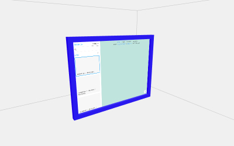
12CSS3D Mixed
Official three.js example “CSS3D Mixed”. The plate is its rendered screenshot; the card opens the same runnable page from this repository.
mrdoob/three.js · examples/css3d_mixed.html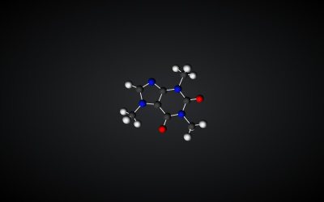
13CSS3D Molecules
Official three.js example “CSS3D Molecules”. The plate is its rendered screenshot; the card opens the same runnable page from this repository.
mrdoob/three.js · examples/css3d_molecules.html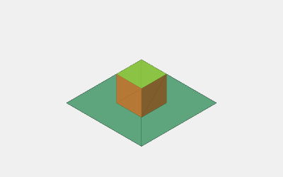
14CSS3D Orthographic
Official three.js example “CSS3D Orthographic”. The plate is its rendered screenshot; the card opens the same runnable page from this repository.
mrdoob/three.js · examples/css3d_orthographic.html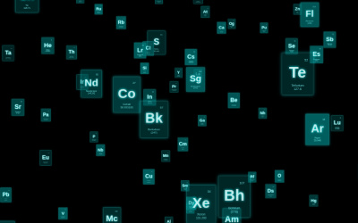
15CSS3D Periodictable
Official three.js example “CSS3D Periodictable”. The plate is its rendered screenshot; the card opens the same runnable page from this repository.
mrdoob/three.js · examples/css3d_periodictable.html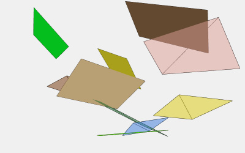
16CSS3D Sandbox
Official three.js example “CSS3D Sandbox”. The plate is its rendered screenshot; the card opens the same runnable page from this repository.
mrdoob/three.js · examples/css3d_sandbox.htmlCSS3D Sprites
Official three.js example “CSS3D Sprites”. The plate is its rendered screenshot; the card opens the same runnable page from this repository.
mrdoob/three.js · examples/css3d_sprites.html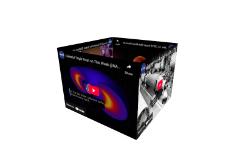
18CSS3D Youtube
Official three.js example “CSS3D Youtube”. The plate is its rendered screenshot; the card opens the same runnable page from this repository.
mrdoob/three.js · examples/css3d_youtube.html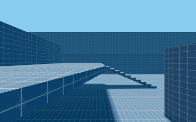
19Games FPS
Official three.js example “Games FPS”. The plate is its rendered screenshot; the card opens the same runnable page from this repository.
mrdoob/three.js · examples/games_fps.html 20
20
Index
Official three.js example “Index”. The plate is its rendered screenshot; the card opens the same runnable page from this repository.
mrdoob/three.js · examples/index.html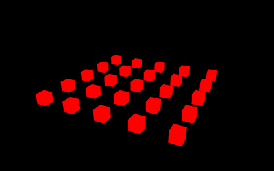
21Misc Animation Groups
Official three.js example “Misc Animation Groups”. The plate is its rendered screenshot; the card opens the same runnable page from this repository.
mrdoob/three.js · examples/misc_animation_groups.html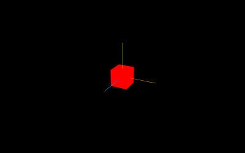
22Misc Animation Keys
Official three.js example “Misc Animation Keys”. The plate is its rendered screenshot; the card opens the same runnable page from this repository.
mrdoob/three.js · examples/misc_animation_keys.html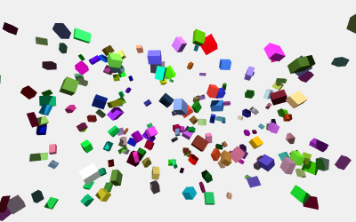
23Misc Boxselection
Official three.js example “Misc Boxselection”. The plate is its rendered screenshot; the card opens the same runnable page from this repository.
mrdoob/three.js · examples/misc_boxselection.html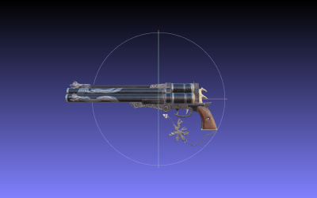
24Misc Controls Arcball
Official three.js example “Misc Controls Arcball”. The plate is its rendered screenshot; the card opens the same runnable page from this repository.
mrdoob/three.js · examples/misc_controls_arcball.html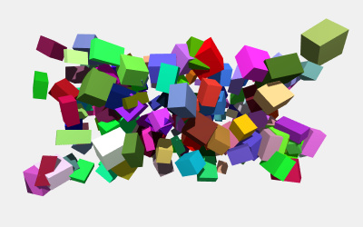
25Misc Controls Drag
Official three.js example “Misc Controls Drag”. The plate is its rendered screenshot; the card opens the same runnable page from this repository.
mrdoob/three.js · examples/misc_controls_drag.html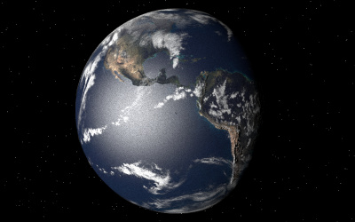
26Misc Controls Fly
Official three.js example “Misc Controls Fly”. The plate is its rendered screenshot; the card opens the same runnable page from this repository.
mrdoob/three.js · examples/misc_controls_fly.htmlMisc Controls Map
Official three.js example “Misc Controls Map”. The plate is its rendered screenshot; the card opens the same runnable page from this repository.
mrdoob/three.js · examples/misc_controls_map.html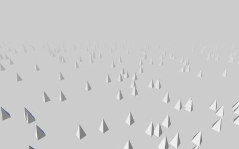
28Misc Controls Orbit
Official three.js example “Misc Controls Orbit”. The plate is its rendered screenshot; the card opens the same runnable page from this repository.
mrdoob/three.js · examples/misc_controls_orbit.html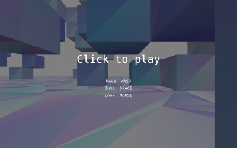
29Misc Controls Pointerlock
Official three.js example “Misc Controls Pointerlock”. The plate is its rendered screenshot; the card opens the same runnable page from this repository.
mrdoob/three.js · examples/misc_controls_pointerlock.html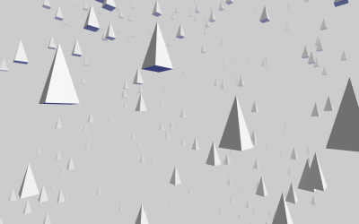
30Misc Controls Trackball
Official three.js example “Misc Controls Trackball”. The plate is its rendered screenshot; the card opens the same runnable page from this repository.
mrdoob/three.js · examples/misc_controls_trackball.html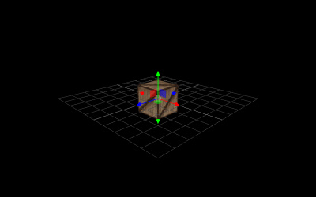
31Misc Controls Transform
Official three.js example “Misc Controls Transform”. The plate is its rendered screenshot; the card opens the same runnable page from this repository.
mrdoob/three.js · examples/misc_controls_transform.html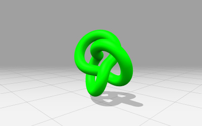
32Misc Exporter Draco
Official three.js example “Misc Exporter Draco”. The plate is its rendered screenshot; the card opens the same runnable page from this repository.
mrdoob/three.js · examples/misc_exporter_draco.html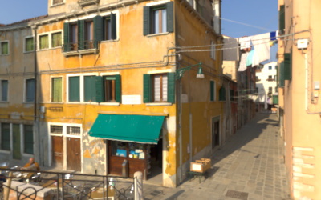
33Misc Exporter Exr
Official three.js example “Misc Exporter Exr”. The plate is its rendered screenshot; the card opens the same runnable page from this repository.
mrdoob/three.js · examples/misc_exporter_exr.html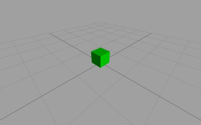
34Misc Exporter Gcode
Official three.js example “Misc Exporter Gcode”. The plate is its rendered screenshot; the card opens the same runnable page from this repository.
mrdoob/three.js · examples/misc_exporter_gcode.html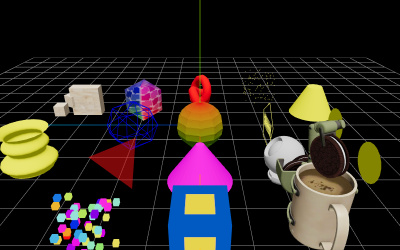
35Misc Exporter glTF
Official three.js example “Misc Exporter glTF”. The plate is its rendered screenshot; the card opens the same runnable page from this repository.
mrdoob/three.js · examples/misc_exporter_gltf.html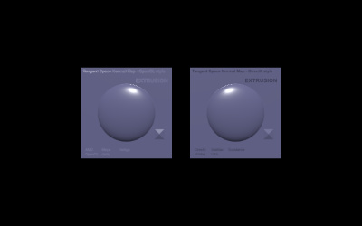
36Misc Exporter glTF Normals
Official three.js example “Misc Exporter glTF Normals”. The plate is its rendered screenshot; the card opens the same runnable page from this repository.
mrdoob/three.js · examples/misc_exporter_gltf_normals.htmlMisc Exporter Ktx2
Official three.js example “Misc Exporter Ktx2”. The plate is its rendered screenshot; the card opens the same runnable page from this repository.
mrdoob/three.js · examples/misc_exporter_ktx2.html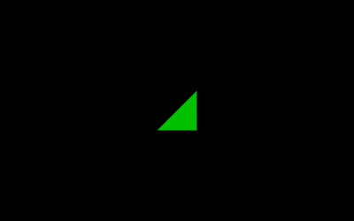
38Misc Exporter Obj
Official three.js example “Misc Exporter Obj”. The plate is its rendered screenshot; the card opens the same runnable page from this repository.
mrdoob/three.js · examples/misc_exporter_obj.html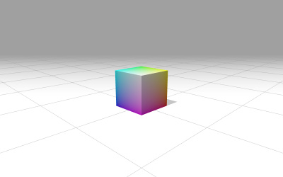
39Misc Exporter Ply
Official three.js example “Misc Exporter Ply”. The plate is its rendered screenshot; the card opens the same runnable page from this repository.
mrdoob/three.js · examples/misc_exporter_ply.html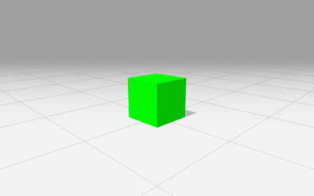
40Misc Exporter Stl
Official three.js example “Misc Exporter Stl”. The plate is its rendered screenshot; the card opens the same runnable page from this repository.
mrdoob/three.js · examples/misc_exporter_stl.html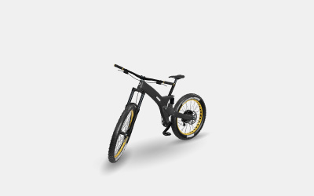
41Misc Exporter Usdz
Official three.js example “Misc Exporter Usdz”. The plate is its rendered screenshot; the card opens the same runnable page from this repository.
mrdoob/three.js · examples/misc_exporter_usdz.html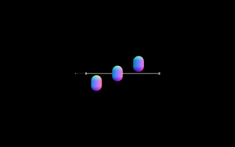
42Misc Raycaster Helper
Official three.js example “Misc Raycaster Helper”. The plate is its rendered screenshot; the card opens the same runnable page from this repository.
mrdoob/three.js · examples/misc_raycaster_helper.html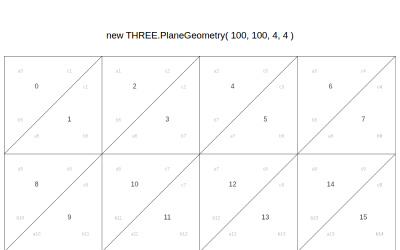
43Misc UV Tests
Official three.js example “Misc UV Tests”. The plate is its rendered screenshot; the card opens the same runnable page from this repository.
mrdoob/three.js · examples/misc_uv_tests.html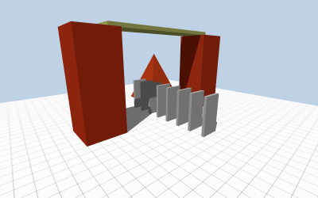
44Physics Ammo Break
Official three.js example “Physics Ammo Break”. The plate is its rendered screenshot; the card opens the same runnable page from this repository.
mrdoob/three.js · examples/physics_ammo_break.html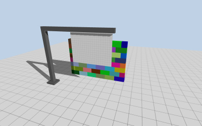
45Physics Ammo Cloth
Official three.js example “Physics Ammo Cloth”. The plate is its rendered screenshot; the card opens the same runnable page from this repository.
mrdoob/three.js · examples/physics_ammo_cloth.html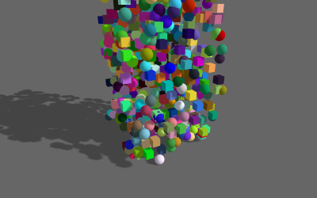
46Physics Ammo Instancing
Official three.js example “Physics Ammo Instancing”. The plate is its rendered screenshot; the card opens the same runnable page from this repository.
mrdoob/three.js · examples/physics_ammo_instancing.html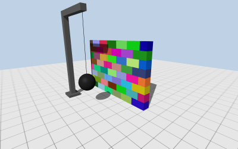
47Physics Ammo Rope
Official three.js example “Physics Ammo Rope”. The plate is its rendered screenshot; the card opens the same runnable page from this repository.
mrdoob/three.js · examples/physics_ammo_rope.html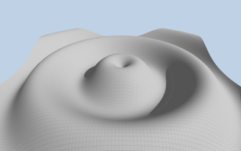
48Physics Ammo Terrain
Official three.js example “Physics Ammo Terrain”. The plate is its rendered screenshot; the card opens the same runnable page from this repository.
mrdoob/three.js · examples/physics_ammo_terrain.html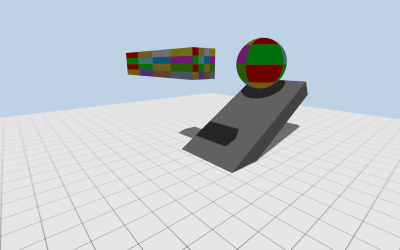
49Physics Ammo Volume
Official three.js example “Physics Ammo Volume”. The plate is its rendered screenshot; the card opens the same runnable page from this repository.
mrdoob/three.js · examples/physics_ammo_volume.html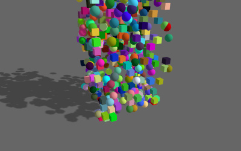
50Physics Jolt Instancing
Official three.js example “Physics Jolt Instancing”. The plate is its rendered screenshot; the card opens the same runnable page from this repository.
mrdoob/three.js · examples/physics_jolt_instancing.html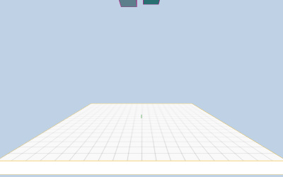
51Physics Rapier Basic
Official three.js example “Physics Rapier Basic”. The plate is its rendered screenshot; the card opens the same runnable page from this repository.
mrdoob/three.js · examples/physics_rapier_basic.html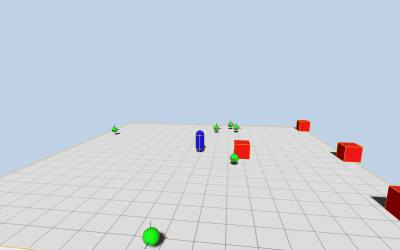
52Physics Rapier Character Controller
Official three.js example “Physics Rapier Character Controller”. The plate is its rendered screenshot; the card opens the same runnable page from this repository.
mrdoob/three.js · examples/physics_rapier_character_controller.html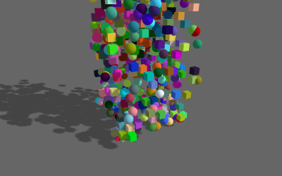
53Physics Rapier Instancing
Official three.js example “Physics Rapier Instancing”. The plate is its rendered screenshot; the card opens the same runnable page from this repository.
mrdoob/three.js · examples/physics_rapier_instancing.html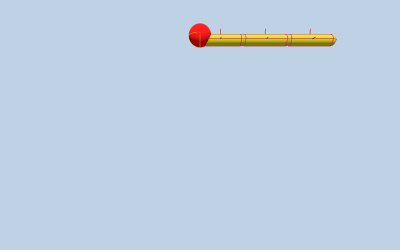
54Physics Rapier Joints
Official three.js example “Physics Rapier Joints”. The plate is its rendered screenshot; the card opens the same runnable page from this repository.
mrdoob/three.js · examples/physics_rapier_joints.html 55
55
Physics Rapier Terrain
Official three.js example “Physics Rapier Terrain”. The plate is its rendered screenshot; the card opens the same runnable page from this repository.
mrdoob/three.js · examples/physics_rapier_terrain.html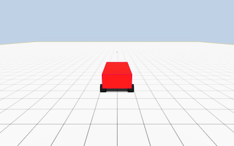
56Physics Rapier Vehicle Controller
Official three.js example “Physics Rapier Vehicle Controller”. The plate is its rendered screenshot; the card opens the same runnable page from this repository.
mrdoob/three.js · examples/physics_rapier_vehicle_controller.html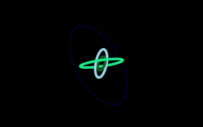
57SVG Lines
Official three.js example “SVG Lines”. The plate is its rendered screenshot; the card opens the same runnable page from this repository.
mrdoob/three.js · examples/svg_lines.html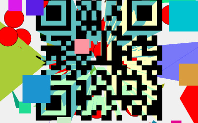
58SVG Sandbox
Official three.js example “SVG Sandbox”. The plate is its rendered screenshot; the card opens the same runnable page from this repository.
mrdoob/three.js · examples/svg_sandbox.html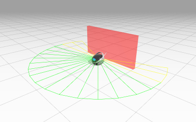
59Webaudio Orientation
Official three.js example “Webaudio Orientation”. The plate is its rendered screenshot; the card opens the same runnable page from this repository.
mrdoob/three.js · examples/webaudio_orientation.html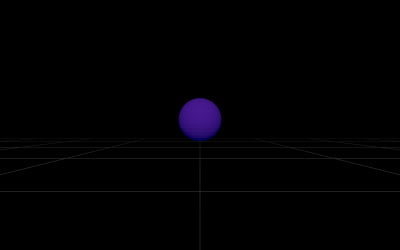
60Webaudio Sandbox
Official three.js example “Webaudio Sandbox”. The plate is its rendered screenshot; the card opens the same runnable page from this repository.
mrdoob/three.js · examples/webaudio_sandbox.html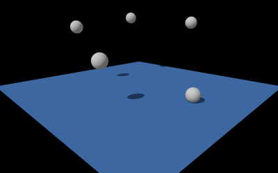
61Webaudio Timing
Official three.js example “Webaudio Timing”. The plate is its rendered screenshot; the card opens the same runnable page from this repository.
mrdoob/three.js · examples/webaudio_timing.html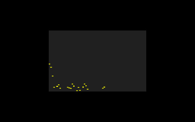
62Webaudio Visualizer
Official three.js example “Webaudio Visualizer”. The plate is its rendered screenshot; the card opens the same runnable page from this repository.
mrdoob/three.js · examples/webaudio_visualizer.html 63
63
WebGL Animation Keyframes
Official three.js example “WebGL Animation Keyframes”. The plate is its rendered screenshot; the card opens the same runnable page from this repository.
mrdoob/three.js · examples/webgl_animation_keyframes.html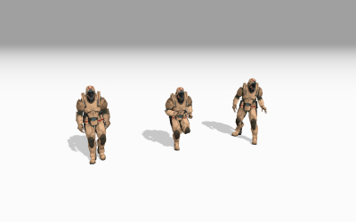
64WebGL Animation Multiple
Official three.js example “WebGL Animation Multiple”. The plate is its rendered screenshot; the card opens the same runnable page from this repository.
mrdoob/three.js · examples/webgl_animation_multiple.html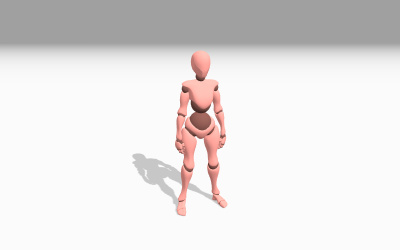
65WebGL Animation Skinning Additive Blending
Official three.js example “WebGL Animation Skinning Additive Blending”. The plate is its rendered screenshot; the card opens the same runnable page from this repository.
mrdoob/three.js · examples/webgl_animation_skinning_additive_blending.html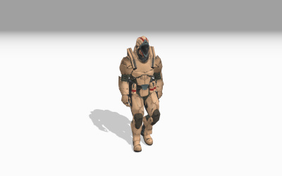
66WebGL Animation Skinning Blending
Official three.js example “WebGL Animation Skinning Blending”. The plate is its rendered screenshot; the card opens the same runnable page from this repository.
mrdoob/three.js · examples/webgl_animation_skinning_blending.html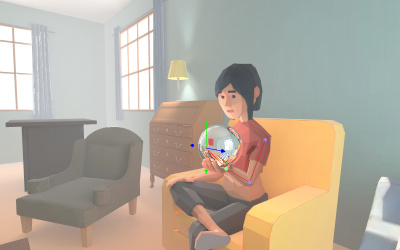
67WebGL Animation Skinning Ik
Official three.js example “WebGL Animation Skinning Ik”. The plate is its rendered screenshot; the card opens the same runnable page from this repository.
mrdoob/three.js · examples/webgl_animation_skinning_ik.htmlWebGL Animation Skinning Morph
Official three.js example “WebGL Animation Skinning Morph”. The plate is its rendered screenshot; the card opens the same runnable page from this repository.
mrdoob/three.js · examples/webgl_animation_skinning_morph.htmlWebGL Animation Walk
Official three.js example “WebGL Animation Walk”. The plate is its rendered screenshot; the card opens the same runnable page from this repository.
mrdoob/three.js · examples/webgl_animation_walk.htmlWebGL Batch LOD BVH
Official three.js example “WebGL Batch LOD BVH”. The plate is its rendered screenshot; the card opens the same runnable page from this repository.
mrdoob/three.js · examples/webgl_batch_lod_bvh.htmlWebGL Buffergeometry
Official three.js example “WebGL Buffergeometry”. The plate is its rendered screenshot; the card opens the same runnable page from this repository.
mrdoob/three.js · examples/webgl_buffergeometry.htmlWebGL Buffergeometry Attributes Integer
Official three.js example “WebGL Buffergeometry Attributes Integer”. The plate is its rendered screenshot; the card opens the same runnable page from this repository.
mrdoob/three.js · examples/webgl_buffergeometry_attributes_integer.htmlWebGL Buffergeometry Attributes None
Official three.js example “WebGL Buffergeometry Attributes None”. The plate is its rendered screenshot; the card opens the same runnable page from this repository.
mrdoob/three.js · examples/webgl_buffergeometry_attributes_none.htmlWebGL Buffergeometry Custom Attributes Particles
Official three.js example “WebGL Buffergeometry Custom Attributes Particles”. The plate is its rendered screenshot; the card opens the same runnable page from this repository.
mrdoob/three.js · examples/webgl_buffergeometry_custom_attributes_particles.htmlWebGL Buffergeometry Drawrange
Official three.js example “WebGL Buffergeometry Drawrange”. The plate is its rendered screenshot; the card opens the same runnable page from this repository.
mrdoob/three.js · examples/webgl_buffergeometry_drawrange.htmlWebGL Buffergeometry Glbufferattribute
Official three.js example “WebGL Buffergeometry Glbufferattribute”. The plate is its rendered screenshot; the card opens the same runnable page from this repository.
mrdoob/three.js · examples/webgl_buffergeometry_glbufferattribute.htmlWebGL Buffergeometry Indexed
Official three.js example “WebGL Buffergeometry Indexed”. The plate is its rendered screenshot; the card opens the same runnable page from this repository.
mrdoob/three.js · examples/webgl_buffergeometry_indexed.htmlWebGL Buffergeometry Instancing
Official three.js example “WebGL Buffergeometry Instancing”. The plate is its rendered screenshot; the card opens the same runnable page from this repository.
mrdoob/three.js · examples/webgl_buffergeometry_instancing.htmlWebGL Buffergeometry Instancing Billboards
Official three.js example “WebGL Buffergeometry Instancing Billboards”. The plate is its rendered screenshot; the card opens the same runnable page from this repository.
mrdoob/three.js · examples/webgl_buffergeometry_instancing_billboards.htmlWebGL Buffergeometry Instancing Interleaved
Official three.js example “WebGL Buffergeometry Instancing Interleaved”. The plate is its rendered screenshot; the card opens the same runnable page from this repository.
mrdoob/three.js · examples/webgl_buffergeometry_instancing_interleaved.htmlWebGL Buffergeometry Lines
Official three.js example “WebGL Buffergeometry Lines”. The plate is its rendered screenshot; the card opens the same runnable page from this repository.
mrdoob/three.js · examples/webgl_buffergeometry_lines.htmlWebGL Buffergeometry Lines Indexed
Official three.js example “WebGL Buffergeometry Lines Indexed”. The plate is its rendered screenshot; the card opens the same runnable page from this repository.
mrdoob/three.js · examples/webgl_buffergeometry_lines_indexed.htmlWebGL Buffergeometry Points
Official three.js example “WebGL Buffergeometry Points”. The plate is its rendered screenshot; the card opens the same runnable page from this repository.
mrdoob/three.js · examples/webgl_buffergeometry_points.htmlWebGL Buffergeometry Points Interleaved
Official three.js example “WebGL Buffergeometry Points Interleaved”. The plate is its rendered screenshot; the card opens the same runnable page from this repository.
mrdoob/three.js · examples/webgl_buffergeometry_points_interleaved.htmlWebGL Buffergeometry Rawshader
Official three.js example “WebGL Buffergeometry Rawshader”. The plate is its rendered screenshot; the card opens the same runnable page from this repository.
mrdoob/three.js · examples/webgl_buffergeometry_rawshader.htmlWebGL Buffergeometry Selective Draw
Official three.js example “WebGL Buffergeometry Selective Draw”. The plate is its rendered screenshot; the card opens the same runnable page from this repository.
mrdoob/three.js · examples/webgl_buffergeometry_selective_draw.htmlWebGL Buffergeometry Uint
Official three.js example “WebGL Buffergeometry Uint”. The plate is its rendered screenshot; the card opens the same runnable page from this repository.
mrdoob/three.js · examples/webgl_buffergeometry_uint.htmlWebGL Camera
Official three.js example “WebGL Camera”. The plate is its rendered screenshot; the card opens the same runnable page from this repository.
mrdoob/three.js · examples/webgl_camera.htmlWebGL Camera Array
Official three.js example “WebGL Camera Array”. The plate is its rendered screenshot; the card opens the same runnable page from this repository.
mrdoob/three.js · examples/webgl_camera_array.htmlWebGL Camera Logarithmicdepthbuffer
Official three.js example “WebGL Camera Logarithmicdepthbuffer”. The plate is its rendered screenshot; the card opens the same runnable page from this repository.
mrdoob/three.js · examples/webgl_camera_logarithmicdepthbuffer.htmlWebGL Clipculldistance
Official three.js example “WebGL Clipculldistance”. The plate is its rendered screenshot; the card opens the same runnable page from this repository.
mrdoob/three.js · examples/webgl_clipculldistance.htmlWebGL Clipping
Official three.js example “WebGL Clipping”. The plate is its rendered screenshot; the card opens the same runnable page from this repository.
mrdoob/three.js · examples/webgl_clipping.htmlWebGL Clipping Advanced
Official three.js example “WebGL Clipping Advanced”. The plate is its rendered screenshot; the card opens the same runnable page from this repository.
mrdoob/three.js · examples/webgl_clipping_advanced.htmlWebGL Clipping Intersection
Official three.js example “WebGL Clipping Intersection”. The plate is its rendered screenshot; the card opens the same runnable page from this repository.
mrdoob/three.js · examples/webgl_clipping_intersection.htmlWebGL Clipping Stencil
Official three.js example “WebGL Clipping Stencil”. The plate is its rendered screenshot; the card opens the same runnable page from this repository.
mrdoob/three.js · examples/webgl_clipping_stencil.htmlWebGL Custom Attributes
Official three.js example “WebGL Custom Attributes”. The plate is its rendered screenshot; the card opens the same runnable page from this repository.
mrdoob/three.js · examples/webgl_custom_attributes.htmlWebGL Custom Attributes Lines
Official three.js example “WebGL Custom Attributes Lines”. The plate is its rendered screenshot; the card opens the same runnable page from this repository.
mrdoob/three.js · examples/webgl_custom_attributes_lines.htmlWebGL Custom Attributes Points
Official three.js example “WebGL Custom Attributes Points”. The plate is its rendered screenshot; the card opens the same runnable page from this repository.
mrdoob/three.js · examples/webgl_custom_attributes_points.htmlWebGL Custom Attributes Points2
Official three.js example “WebGL Custom Attributes Points2”. The plate is its rendered screenshot; the card opens the same runnable page from this repository.
mrdoob/three.js · examples/webgl_custom_attributes_points2.htmlWebGL Custom Attributes Points3
Official three.js example “WebGL Custom Attributes Points3”. The plate is its rendered screenshot; the card opens the same runnable page from this repository.
mrdoob/three.js · examples/webgl_custom_attributes_points3.htmlWebGL Decals
Official three.js example “WebGL Decals”. The plate is its rendered screenshot; the card opens the same runnable page from this repository.
mrdoob/three.js · examples/webgl_decals.htmlWebGL Depth Texture
Official three.js example “WebGL Depth Texture”. The plate is its rendered screenshot; the card opens the same runnable page from this repository.
mrdoob/three.js · examples/webgl_depth_texture.htmlWebGL Effects Anaglyph
Official three.js example “WebGL Effects Anaglyph”. The plate is its rendered screenshot; the card opens the same runnable page from this repository.
mrdoob/three.js · examples/webgl_effects_anaglyph.htmlWebGL Effects Ascii
Official three.js example “WebGL Effects Ascii”. The plate is its rendered screenshot; the card opens the same runnable page from this repository.
mrdoob/three.js · examples/webgl_effects_ascii.htmlWebGL Effects Parallaxbarrier
Official three.js example “WebGL Effects Parallaxbarrier”. The plate is its rendered screenshot; the card opens the same runnable page from this repository.
mrdoob/three.js · examples/webgl_effects_parallaxbarrier.htmlWebGL Effects Stereo
Official three.js example “WebGL Effects Stereo”. The plate is its rendered screenshot; the card opens the same runnable page from this repository.
mrdoob/three.js · examples/webgl_effects_stereo.htmlWebGL Framebuffer Texture
Official three.js example “WebGL Framebuffer Texture”. The plate is its rendered screenshot; the card opens the same runnable page from this repository.
mrdoob/three.js · examples/webgl_framebuffer_texture.htmlWebGL Furnace Test
Official three.js example “WebGL Furnace Test”. The plate is its rendered screenshot; the card opens the same runnable page from this repository.
mrdoob/three.js · examples/webgl_furnace_test.htmlNothing in this volume matches that. Try a shorter word.